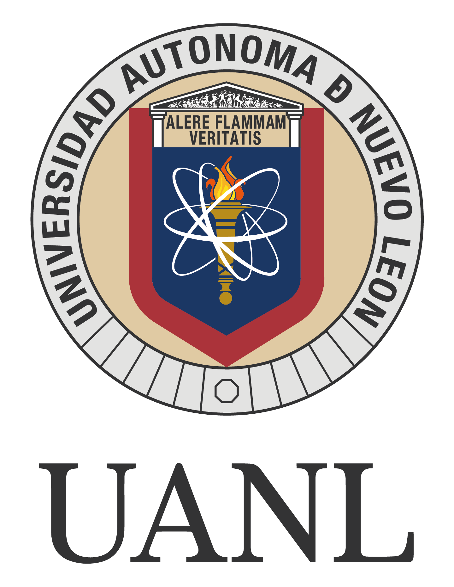
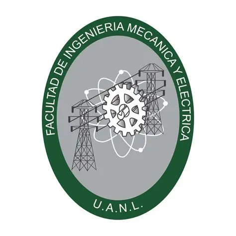
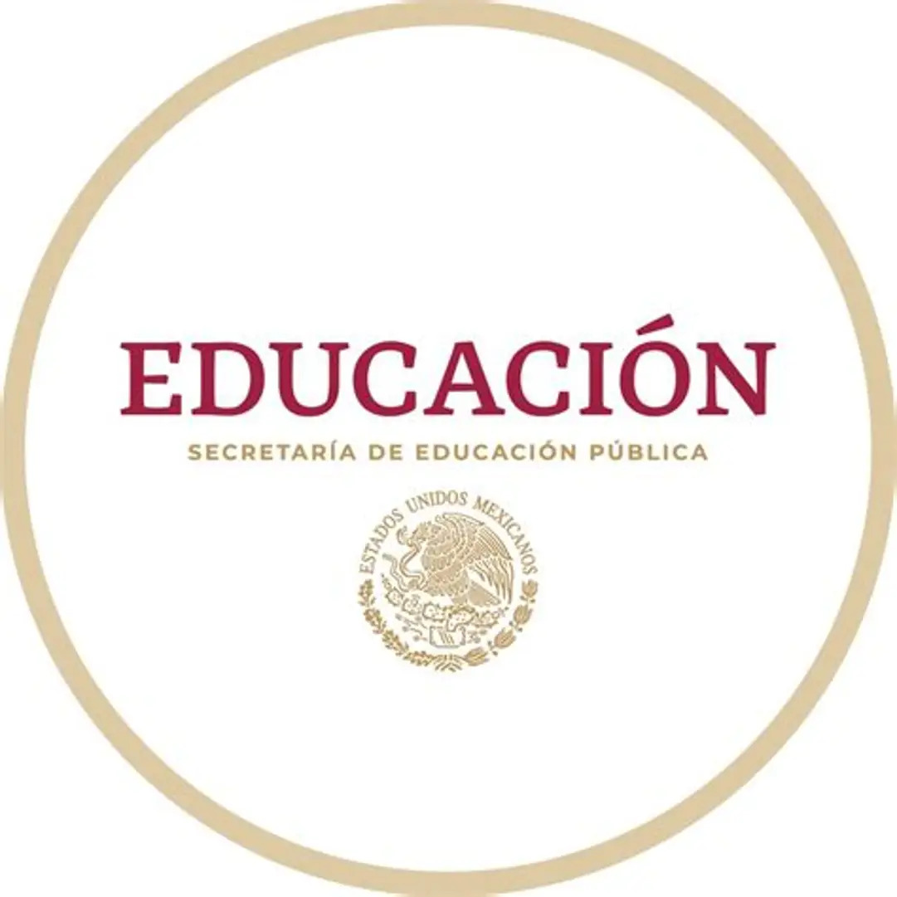
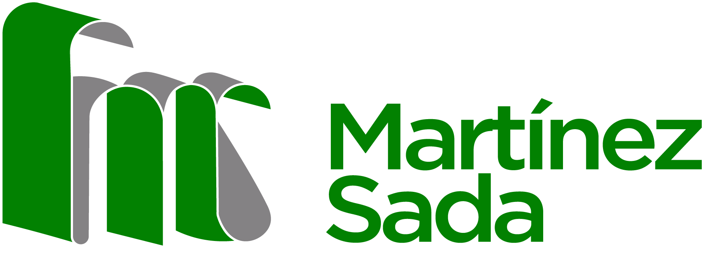

Actividad Fundamental 7: Portafolio de Becas y Apoyos Académicos
En este portal se documenta el análisis de las principales becas universitarias, gubernamentales y de la iniciativa privada a las que puedo postularme como estudiante, contando con un promedio general de 8.9.
Categorías de Becas Disponibles
| Imagen Representativa | Categoría de Beca | Tipo de Apoyo Principal | Acción |
|---|---|---|---|
|
  |
Becas UANL y FIME | Exención de pago en cuota de Rectoría, cuota interna de FIME e intercambio académico | |
 |
Becas de Gobierno | Manutención económica bimestral, capacitación técnica y apoyo al transporte en Nuevo León | |
 |
Becas de Empresas Privadas | Estímulos económicos por excelencia en Ingeniería/STEM, laptops y certificaciones TI |
Becas Universitarias: UANL y FIME
Objetivo y cobertura de las becas institucionales
Las becas otorgadas directamente por la Universidad Autónoma de Nuevo León (a través del Departamento de Becas de Rectoría) y la Facultad de Ingeniería Mecánica y Eléctrica (Coordinación de Becas FIME) tienen como finalidad apoyar la permanencia escolar y premiar el rendimiento académico sobresaliente. Estas becas reducen desde un 50% hasta un 100% el costo de las boletas de inscripción semestrales, además de financiar estancias de movilidad nacional e internacional.
Antecedentes y funcionamiento
El programa de becas de la UANL opera de forma semestral directamente desde la plataforma SIASE. Tanto el patronato universitario como la Fundación UANL y la administración de FIME destinan recursos para que ningún estudiante de ingeniería abandone sus estudios por motivos económicos y para que los alumnos con promedios competitivos reciban un incentivo directo en sus cuotas escolares.
Por qué aplicaría
Contar con un promedio general de 8.9 me coloca en una posición ideal. Mientras que las becas de promedio exigen un mínimo de 85 sin materias reprobadas en primeras oportunidades, mi calificación supera el corte requerido y me permite competir también por becas de movilidad internacional de la Fundación UANL (que suelen pedir mínimo 85).
Solicitar tanto la beca en cuota de Rectoría como la beca de cuota interna de FIME representa un ahorro semestral directo sumamente importante, permitiéndome destinar esos recursos a certificaciones técnicas de redes, cursos de desarrollo de software o equipamiento de cómputo.
Tipos de Becas en UANL y FIME para mi perfil
| Nombre de la Beca | Requisitos Principales | Beneficio Otorgado |
|---|---|---|
| Beca de Cuota de Rectoría por Promedio (SIASE) | Promedio de 85 o superior en el semestre anterior, sin segundas oportunidades | Exención del 100% del pago de la boleta de cuota escolar de Rectoría |
| Beca de Cuota Interna FIME (Promedio) | Promedio de 85 o superior, llenado de estudio socioeconómico en SIASE | Descuento parcial o total en la aportación de la facultad de Ingeniería |
| Beca por Colaboración / Ayudantía (FIME) | Promedio superior a 85, dominio de la materia a impartir (ej. Arquitectura de Computadoras, Bases de Datos) | Exención de cuotas y gran valor curricular (liberación de horas de servicio/créditos) |
| Beca de Movilidad e Intercambio (Fundación UANL) | 5.º semestre en adelante, promedio de 85, examen EXCI acreditado | Apoyo económico de $2,500 a $5,000 USD para estancias de un semestre en el extranjero |
| Beca de Prácticas Profesionales y Servicio Social (UANL) | Estar formalmente inscrito en el semestre de servicio social o prácticas, alumno regular | Descuento en la boleta de inscripción durante el ciclo de prácticas |
Becas Gubernamentales (Federal y Estatal)
Objetivo y cobertura de las becas públicas
Los programas de becas del Gobierno Federal (a través de la Coordinación Nacional de Becas para el Bienestar y la SEP) y del Gobierno del Estado de Nuevo León (Instituto Estatal de la Juventud y Secretaría de Educación) buscan impulsar a los estudiantes de universidades públicas mediante apoyos monetarios directos, subsidios en el transporte público y programas de capacitación tecnológica.
Antecedentes y programas vigentes
En México, el Sistema Único de Beneficiarios de Educación Superior (SUBES) ha canalizado históricamente las becas de manutención, excelencia e iniciación a la investigación para alumnos de instituciones como la UANL. Adicionalmente, en Nuevo León existen apoyos locales focalizados en la movilidad urbana de los universitarios que se trasladan diariamente hacia Ciudad Universitaria en San Nicolás de los Garza.
Por qué aplicaría
Al estar inscrito en una institución pública como la UANL y mantener un estatus de alumno regular con promedio de 8.9, cumplo con todos los criterios académicos tanto para las becas federales de educación superior como para las convocatorias de excelencia o servicio social e investigación (como el Verano de la Investigación Científica Delfín / CONAHCYT).
Estos apoyos son ideales porque no solo se limitan a descontar colegiaturas, sino que depositan un recurso económico directo que ayuda a solventar gastos diarios de traslado a Ciudad Universitaria, materiales de estudio y proyectos de programación.
Tipos de Becas de Gobierno disponibles
| Nombre de la Beca / Programa | Requisitos Principales | Beneficio Otorgado |
|---|---|---|
| Beca Federal de Manutención (SUBES) | Inscrito en la UANL, alumno regular, registro activo en el portal SUBES | Apoyo económico directo depositado bimestralmente (aprox. $9,000 MXN anuales) |
| Apoyo de Transporte "Jóvenes Nuevo León" (INJUVE) | Estudiante residente en NL, credencial UANL vigente, llenado de formato estatal | Tarifa preferencial o saldo mensual gratuito en tarjeta Me Muevo / Urbani para Metro y camiones |
| Verano de la Investigación Científica (Programa Delfín) | Cursar mínimo 4.º semestre, promedio superior a 8.5 en áreas de Tecnología e Ingeniería | Estancia de investigación de 7 semanas con apoyo de viáticos (ideal para proyectos de TI) |
| Beca de Capacitación y Habilidades Digitales (Federal) | Alumnos de licenciatura, registro en SUBES cuando se abren convocatorias extraordinarias | Apoyo económico único y acceso a plataformas de certificación tecnológica |
| Beca para Iniciar la Titulación / Prácticas (SEP) | Estar por iniciar o cursando las prácticas profesionales, promedio de 8.0 en adelante | Estímulo económico para solventar gastos iniciales de inserción laboral |
Becas de Empresas y Fundaciones Privadas
Objetivo y cobertura en el sector privado
Grandes corporativos industriales, instituciones bancarias y fundaciones tecnológicas en México otorgan becas de excelencia para impulsar el talento en carreras STEM (Ciencia, Tecnología, Ingeniería y Matemáticas). A diferencia de otras becas, estas suelen incluir mentorías profesionales, cursos certificados en tecnologías emergentes, equipamiento de cómputo y vinculación directa con sus programas de prácticas profesionales.
Presencia y vinculación con la UANL
En Nuevo León, empresas líderes como Telmex (a través de la Fundación Excelencia Fundación Telmex) y Banco Santander (Santander Open Academy) mantienen convenios activos con la UANL. Cada año premian a los estudiantes de ingeniería con los mejores promedios de sus facultades para formarlos como futuros líderes del sector tecnológico e industrial.
Por qué aplicaría
Las becas de empresas privadas suelen tener filtros de promedio mucho más estrictos. Mi promedio de 8.9 me permite cumplir con el requisito de excelencia de la Beca Fundación José A. Martínez Sada (que premia a estudiantes destacados con promedio arriba de 8.5) y de las Becas Santander de Manutención y Tecnología.
Obtener una beca corporativa no solo brinda un gran respaldo financiero, sino que aporta un enorme valor curricular al momento de aplicar a vacantes de TI, desarrollo backend o bases de datos dentro de estas mismas empresas en el ciclo 2027.
Tipos de Becas Corporativas para Estudiantes de TI
| Nombre de la Beca | Requisitos Principales | Beneficio Otorgado |
|---|---|---|
| Beca Fundación José A. Martínez Sada | Estar inscrito formalmente en la UANL (FIME), promedio competitivo (superior a 85) y comprobación de necesidad de apoyo | Apoyo económico depositado de forma mensual para solventar gastos de manutención, transporte y materiales escolares |
| Beca Santander Apoyo a la Manutención | Historial académico regular, haber cursado el 30% de créditos, promedio superior a 8.0 | Apoyo de $9,000 MXN de libre uso depositado directamente al estudiante |
| Becas Santander Tech (Habilidades TI) | Ser estudiante universitario en México, sin importar el promedio | Cursos y certificaciones gratuitas con valor curricular (AWS, Inteligencia Artificial, Ciberseguridad) |
| Beca de Excelencia Fundación Telmex - Telcel | Promedio de 9.0 (o 8.9 con perfil extracurrícular fuerte), cursar de 3.º a 7.º semestre | Apoyo económico mensual, computadora gratuita con internet y congresos exclusivos |
| Becas de Certificación TI (Cisco / Fundación Carlos Slim) | Tener conocimientos básicos en redes (CCNA 1), interés en telecomunicaciones | Acceso a vales de descuento del 100% para presentar el examen oficial de certificación CCNA |